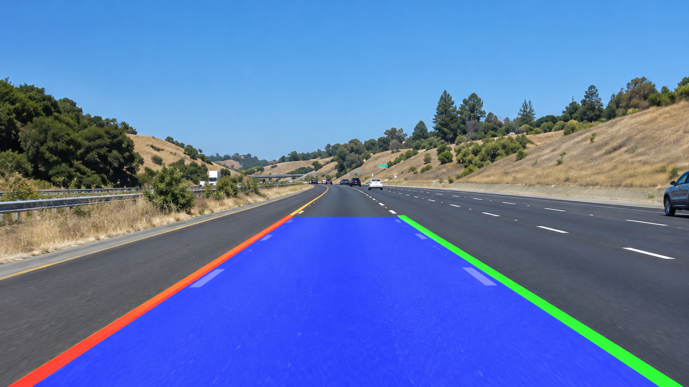
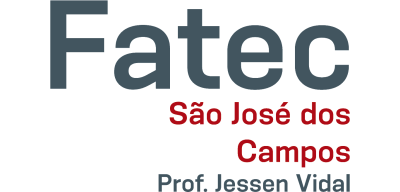

Atualmente
Bacharelado em Ciência da Computação
Insper · São Paulo, Brasil
Estudos em algoritmos, engenharia de software, machine learning, visão computacional e sistemas computacionais.
CIÊNCIA DA COMPUTAÇÃO · INSPER · SÃO PAULO
Construindo software.
Explorando inteligência artificial.
Estudo Ciência da Computação no Insper e desenvolvo projetos em machine learning, visão computacional, segurança e backend. Aqui compartilho o que construo e aprendo.
Dados públicos de vacinação organizados em um sistema de consultas por localização e faixa etária.
Conhecer o projeto ↓Uma visão rápida do que construí. Abra um projeto para conhecer a abordagem e acessar o código.
O projeto combina coleta de páginas públicas, organização dos dados e interação em linguagem natural para orientar consultas por localização e faixa etária.
Ver código no GitHub ↗ (abre em nova aba)O projeto explora derivação de chaves com Argon2id e criptografia autenticada com AES-GCM em um gerenciador de senhas de linha de comando.
Ver código no GitHub ↗ (abre em nova aba)
A implementação utiliza pré-processamento, detecção de bordas, transformação de perspectiva e análise geométrica para investigar a percepção de faixas de trânsito.
Ver código no GitHub ↗ (abre em nova aba)Perguntas, decisões de implementação e aprendizados ao construir sistemas.
Explorar todas as notas ↗Os papéis de salt, nonce e chave no armazenamento seguro de senhas.
Criptografia · RascunhoProcessamento de imagens e análise geométrica para perceber faixas.
Visão computacional · PlanejadaColeta e organização de dados para consultas em linguagem natural.
Sistemas de dados · PlanejadaAtualmente
Insper · São Paulo, Brasil
Estudos em algoritmos, engenharia de software, machine learning, visão computacional e sistemas computacionais.

Anteriormente
Fatec · São José dos Campos, Brasil
Cursei um semestre antes de continuar minha formação em Ciência da Computação no Insper.
Uso projetos para entender como algoritmos, dados e decisões de software se conectam. Meus interesses passam por machine learning, visão computacional, segurança e sistemas de backend.
Este portfólio é um registro em desenvolvimento: reúne implementações, escolhas técnicas, limitações e assuntos que ainda estou investigando. As notas acompanham esse aprendizado.
CONTATO & REDES
Tenho interesse em estágios, projetos de pesquisa e conversas sobre IA e engenharia de software. Escolha o canal que preferir.